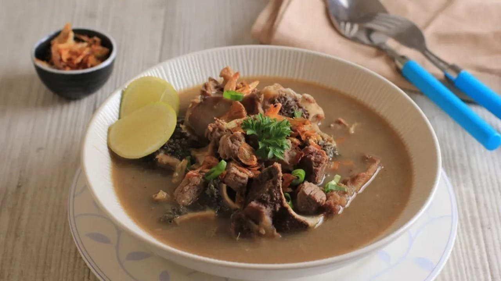

Coto Makassar
Berikut adalah daftar bahan dan alat yang digunakan untuk membuat Coto Makassar, hidangan khas Sulawesi Selatan.
Bahan-Bahan:
- 500 gram daging sapi
- 200 gram jeroan (paru, babat, atau hati sapi)
- 2 liter air cucian beras
- 3 batang serai (memarkan)
- 5 lembar daun salam
- 1 sdm garam
- 6 siung bawang putih
- 8 butir bawang merah
- 2 cm lengkuas
- 2 cm jahe
- 2 sdm kacang tanah sangrai
- 1 sdt ketumbar
- 1 sdt jintan
Alat-Alat:
- 1 panci besar untuk merebus
- 1 wajan untuk menumis bumbu
- Sendok kayu atau spatula
- Pisau untuk memotong daging
- Talenan
- Blender atau ulekan untuk menghaluskan bumbu
- Mangkok saji
- Ketupat atau buras (opsional, sebagai pelengkap)
Tonton Video Tutorial:
Klik link berikut untuk menonton video tutorial: Tonton Tutorial Membuat Coto Makassar
Back to Home